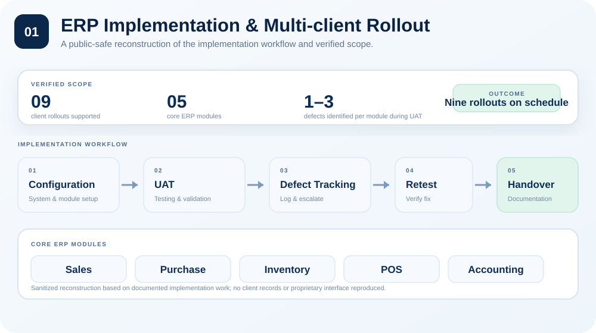

01ERP IMPLEMENTATION

View full visual ↗Multi-client ERP rollout & end-user support
Supported nine client rollouts across Sales, Purchase, Inventory, POS, and Accounting, including remote support, configuration, troubleshooting, UAT, and handover documentation.
09rollouts supported
05core modules
1–3defects identified per module